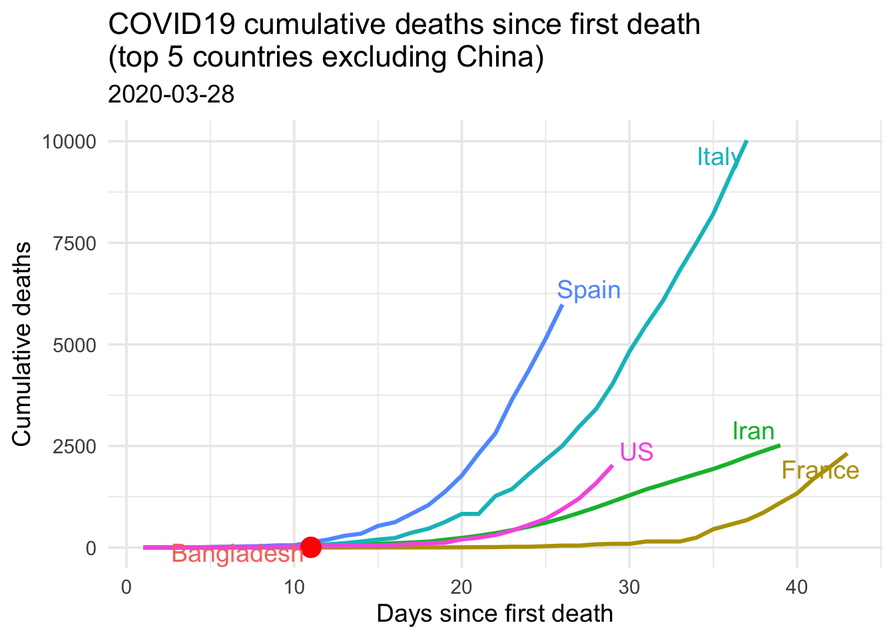
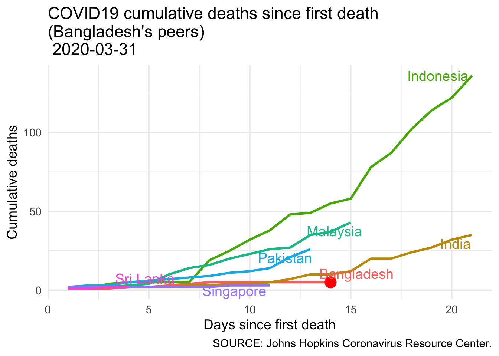

Report 2 Bangladesh at a glance
চিত্র ও টেবিল আপডেট করা হয়েছে 2020-03-29 তারিখের ডেটা অনুযায়ী।
দুটি সেকশনে সামারি আছে। দেখতে স্ক্রল করে নিচে নামুন - বিশ্বের সাথে বাংলাদেশের তুলনা - দক্ষিণ এশিয়ার সাথে বাংলাদেশের তুলনা।
2.1 Current Situation
করোনাভাইরাস-এ কতজন আক্রান্ত হয়েছে এই সংখ্যাটি নির্ভর করে কতজনকে করোনাভাইরাসের পরীক্ষা করা হয়েছে তার ওপর।
তাই নতুন করে কতজন আক্রান্ত হয়েছে সেটি দেশ-ভেদে পার্থক্য হবে কেননা সেটি নির্ভর করে সেই দেশ কী পরিমাণ টেস্ট করছে তার উপর। তাই আমার কাছে কতজন নতুন করে আক্রান্ত হয়েছে সেটির চেয়ে বরং দেশ-প্রতি কতজন মারা গিয়েছে সেটি এককভাবে বেশি গুরুত্বপূর্ণ একটি মেট্রিক।
নিচে প্রথম রিপোর্টেড মৃত্যু থেকে বর্তমান অবস্থায় পৌঁছুতে কতদিন লেগেছে তার তুলনামূলক চিত্র দেখানো হয়েছে। সেই সাথে বাংলাদেশের অবস্হান কোথায় তা দেখানো হয়েছে। করোনাভাইরােসর কারণে মৃত্যুর হার যদি একই থাকে, এ চিত্র থেকে বাংলাদেশের পরিস্হতি আগামি ৩০ দিনে কীভাবে পরিবর্তিত হতে পারে সে সম্পর্কে ধারণা পাওয়া যাবে।
এখন পর্যন্ত যা পরিষ্কার তা হল বাংলাদেশের পরিস্থিতি আগামী একমাস পর্যবেক্ষণ করতে হবে।
2.2 Bangladesh compared to the world

| country | TotalDeath |
|---|---|
| Italy | 10779 |
| Spain | 6803 |
| Iran | 2640 |
| France | 2611 |
| US | 2467 |
| Bangladesh | 5 |
2.3 Bangladesh in South Asia

| country | TotalDeath |
|---|---|
| Indonesia | 114 |
| Malaysia | 35 |
| India | 27 |
| Pakistan | 14 |
| Bangladesh | 5 |
| Singapore | 3 |
| Sri Lanka | 1 |
2.4 Summary
অন্য দেশের সাথে তুলনা করলে আমরা দেখব যে বিপদ এখনো কাটেনি। বরং সামনের দিনগুলোতে পরিস্হিতি বদলে যেতে পারে। এক্ষেত্রে এসাম্পসন হচ্ছে বাংলাদেশের ডেটা রিপোর্টিং ঠিকমত হচ্ছে এবং তা বজায় থাকবে।